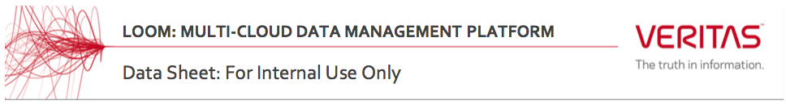
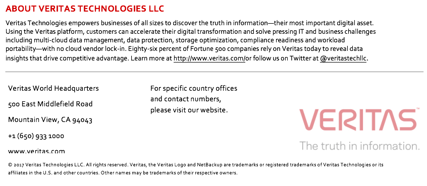

Loom Alpha2 Datasheet¶
{kind=link}
In today’s data- and information-centric era, many enterprises are embracing multiple clouds. IDC predicts that by 2020, over 90% of enterprises will use multiple cloud services and platforms. Use of machine learning and artificial intelligence are driving deep insights from enterprise data, helping businesses to improve operations, build better products and drive customer success.
As these technologies become entrenched in business, data continues to grow at an exponential rate. IDC forecasts that by 2025, the digital universe will grow to 180 zettabytes of data. This data exists across multiple public and private clouds, Software-as-a-Service (SaaS) solutions and traditional storage systems. The data ranges from structured to semi-structured to de-structured and unstructured. In the absence of cutting edge software solutions, even sophisticated organizations will struggle to maximize value while reducing risk and cost associated with their data.
Recognizing this, many organizations are looking for comprehensive digital information management solutions that help address these concerns. Most current solutions are point products that are difficult to deploy and manage and do not offer a unified digital information management capability to address these challenges. An appropriate solution must provide visibility and insight into data, meet regulatory requirements, help secure data and control costs in this complex environment.
Veritas Loom is the first comprehensive intelligent data platform that helps organizations to address all of their data-related challenges. Loom is a web-scale platform that enables built-in and 3rd party apps and services to manage and eventually monetize information assets.
{kind=link}
Figure 1: High-level view of the Veritas Loom Platform.
Unique Benefits of Loom Platform¶
- Unparalleled visibility with built-in actions allows customers to make informed decisions and implement those decisions on unstructured data in complex environments.
- Policy-based control over unstructured data allows customers to achieve digital compliance goals across multi-cloud environments.
- APIs allow 3rd parties to drive additional information into, and read information out of Loom allowing customers to integrate Loom easily into new or existing business workflows.
Loom is offered as a service (SaaS) in Release 1.0. In future releases it will be offered in an appliance form-factor and as a VMware-compatible virtual appliance to run on-premises. Regardless of form-factor, the data engine component can be deployed on-premises or in public clouds – as close as possible to where the data is located.
Key Platform Concepts¶
Veritas Loom is built from the ground up as a cloud native, micro-services-based, web-scale solution. Some of the key concepts of Loom are described in the table below:
| Concept | Details |
|---|---|
| Control Plane | The control plane provides business process workflow management and internal system orchestration. |
| Data Engine | The data engine enables discovery, scanning and classification of data sources. Many data engine instances can be deployed for one Control Plane. This flexibility allows the data engines to be as close to the data as possible. |
| Data Connectors | Data connectors abstract the complexity of underlying data locations, stores and types. Loom supports the following connectors: Cloud
On-Premises
Veritas
|
| Asset Database | This is the central metadata repository for Loom. Veritas, 3rd parties and customers can leverage the Asset Database to enrich their own applications and business processes.
|
| Actions | Actions allow organizations to orchestrate unstructured data across complex environments (ex: moving data from on-premises-to-cloud-storage or deleting data older than 3 years across heterogeneous locations.
|
| Analytics | Pre-defined visualizations help organizations quickly understand and make decisions on data. |
| Content Classification | Content classification enables organizations to quickly scan content and tag data to help ensure that sensitive or risky information is properly managed. tag data to ensure that sensitive or risky information is properly managed and protected. |
| Apps | Loom hosts apps allowing organizations to address multi-cloud issues like digital compliance, data mapping/movement/deletion, and data protection. These apps will often have vertical- or business-specific workflows. 3rd parties can also develop apps to run on Loom. |
{kind=link}
Early Adopter Product Benefits using DataVision¶
| Actionable Insights | Gather intelligent information insights that can help enterprises to understand the location of their data assets and make informed business decisions. |
| Better Operational Efficiencies | Storage Tiering: Use analytics to drive data movement across on-premises and cloud to manage costs and optimize storage. |
| TCO Savings: Use analytics to determine the cost of information and save costs. |
Loom Technical Specifications¶
Loom is a Software-as-a-Service (SaaS) offering that requires no additional hardware or software deployment by the customer for analyzing enterprise content repositories located in the cloud. However, if an enterprise needs to utilize Loom features for its content repositories located on premises, in a secured manner, an additional Loom component called Data Engine needs to be deployed. The system requirements for this on-premises Data Engine component are listed in the figure below.
{kind=link}
Figure 3: System requirements for deploying the Data Engine.
Loom customers can connect cloud and on-premises data sources supported by the Loom data connectors. To connect any on-premises content sources, Loom customers need to deploy the on-premises Data Engine component. For further details regarding Loom technical specifications, refer to the System Requirements section in the Loom On-Premises Data Engine Deployment Guide.
{kind=link}